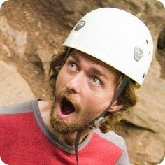

Theoretical Ecology and Evolution
 I believe in experiential education and fostering an appreciate for the natural world in and outside of the classroom. I help organize and lead wilderness trips for disadvantaged children in Sacramento through Inner City Outings. I also guide rock climbing, snow camping, and backpacking trips for college students and the general public through Davis Outdoor Adventures and through Shasta Mountain Guides. I was introduced to outdoor leadership and education through Princeton's orientation program, Outdoor Action, where I lead trips and trained leaders in both technical skills and group dynamics. (See my Outdoor Guide C.V.)
I am interested in sustainable and cooperative living. I am on the board of directors of the nonprofit Solar Community Housing Association (SCHA), which is dedicated to encourage and create community and respect for environment through affordable, cooperative housing. We are recently built an environmentally friendly, affordable housing cooperative in downtown Davis which received LEED certification and organized a community build to refurbish the Domes cooperative, which we now manage on behalf of UC Davis. I was previously a member of Brown Co-op. Through cooperatives I have gained experience in non-profit leadership and management, conflict resolution, consensus decision-making and community engagement.
I'm a founding member of the Davis Open Science group, which promotes awareness, tools, and community around issues such as open access publishing, open source software, open notebook science, and open data. I believe this makes large-scale, collaborative science possible, ensures results are reproducible and increases the access of educators, policy-makers and taxpayers to the process and results of science. I'm an advisor for Mendeley research networks because I share it's vision to provide tools for more open and collaborative research. I strive to make my research process transparent and reproducible through the practice of Open Notebook Science.